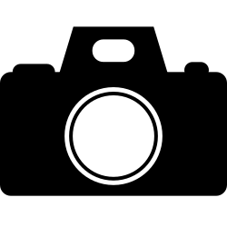
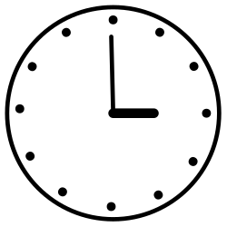
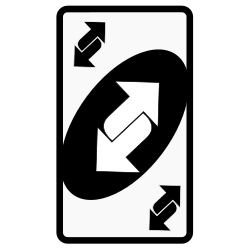

może to być telefon, aparat czy kamera; zarówno zwykła, jak i bardziej zaawansowana- im lepsze parametry udządzenia, tym potencajlna lepsza jakośc naszego tworu
stabilnie umiejscowione urządzenia pozwoli nam pozbyć się rozmyć czy szumów. A poza tym, kto wytrzymałby w bezruchu z telefonem przez kilkadziesiąt minut?
nasze timelapsy mogą być zarówno dłuższe i krótsze- niezależnie od tego, takie nagranie potrzebuje adekwatnego podłoża materiałowego
mniejsze jak roślina, większe jak cały krajobraz- nasz cel, element który chcemy uchwycić "na szybko"
praktycznie każdy program do obrówki filmów daje nam możliwość przyspieszenia ich, jest to ostatni, ale nie najmniej ważny element naszego procesu twórczego
każdy film jest zestawieniem pojedyńczych zdjęć- timelaps jest przyspieszonym nagraniem, zatem na każdą rzeczywistą minutę potrzebujemy mniejszą ilość zdjęć.
